At it’s core, The Hanen Centre is a hub for Speech Language Pathologists to update their qualifications in working directly with young children on language-centred skills. It also serves as a reservoir of resources for other early-language professionals, parents, and caregivers.
Among the many services offered are in-person workshops, live and on-demand seminars, physical and digital resources and products, and a large collection of in-house research and content generated weekly for multiple audiences.
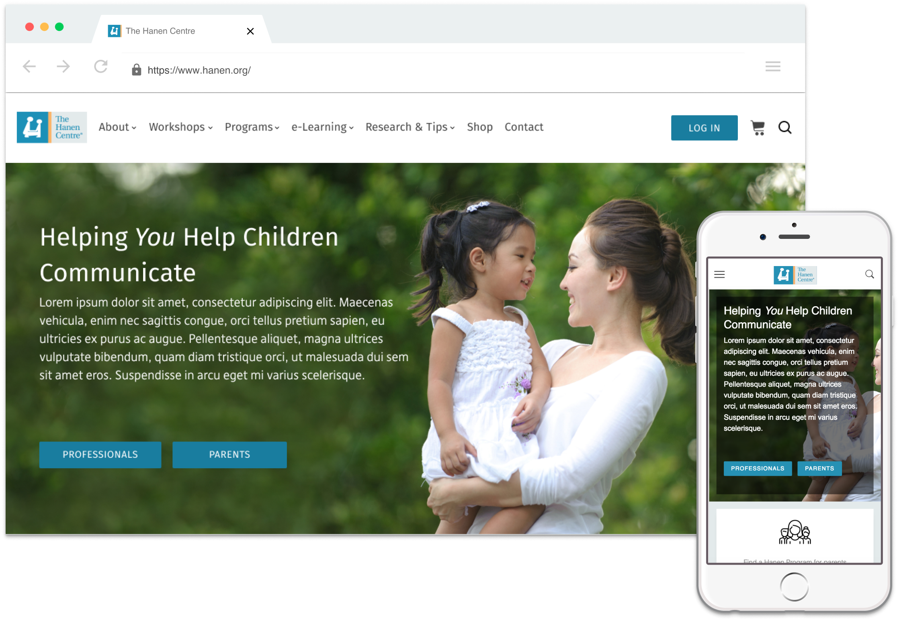The previous website was built in 2011. By the time I came on board, it had a long list of grievances against it, and the team had already made the decision that it was not salvageable and to forge ahead with an entirely new set of technology with a new design.
In addition to a few years of google analytics, we had user research based on phone and web surveys, user interviews from active professionals and a variety of caregivers, and user testing on the current website. This generated 5 personas, primary user flows, and a mountain of information about what current users were -and were not- looking for from The Hanen Centre and in the website. I also had a kickstart to the project with recently defined brand guidelines (color and typography) and a first draft of new design concepts for the new project.
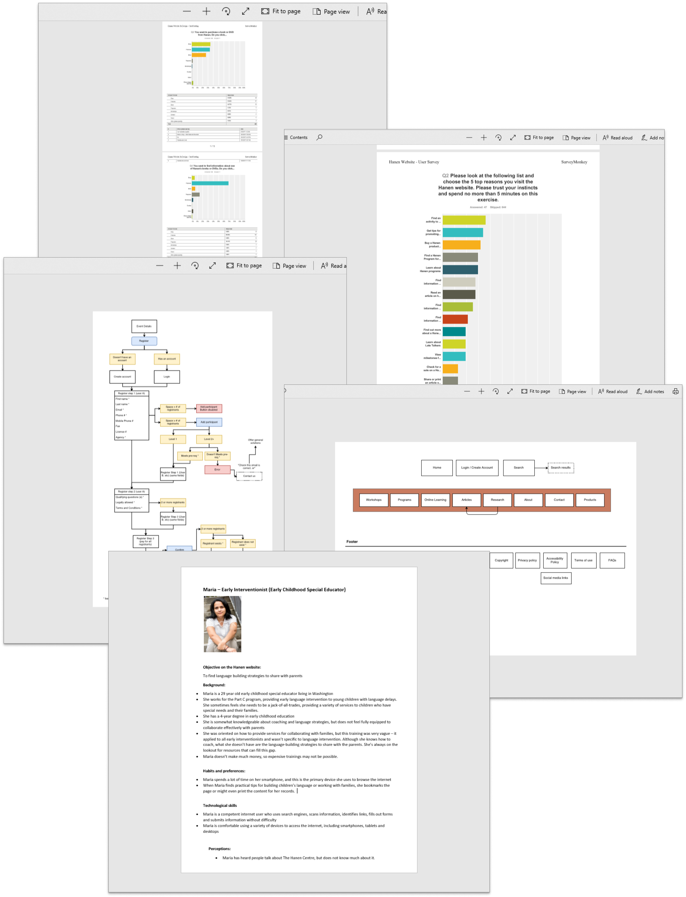The Hanen Centre breaks down into 6 main services: Ecommerce with physical and online products, article-type content in text and video format, live single to multi day events, online live and on-demand events, connecting parents and caregivers with professionals, and membership benefits (for speech language pathologists)
All of these services are used daily, and Hanen is well known within the SLP industry for its courses and content.
In the initial research, beyond the clear indication that the users wanted to view the website on mobile devices, a few other inconsistencies were highlighted.
Site navigation
Many different people want to discover many different types of information from Hanen, but can get quickly confused with custom naming conventions and deep nesting of content.
Event registration
The primary resource that Hanen offers are workshops - multi day, high ticket price, in person events that qualify an SLP to run a program on the same subject to parents. However, the registration, pre and post event experiences can confusing, difficult, and highly manual.
Content leads
One of the primary avenues for new leads to Hanen are through articles found by google searches. Some articles have very high popularity, but almost all have a bounce rate of 85% or more. In user testing, this was backed up when users reported feeling confused on where they were, or where to go next and opted to use the back button to google instead of exploring the site further. Many users expressed the desire to explore more content, but didn't know how to find it.
Brand friendliness
Hanen offers resources to everyone equally, but the perspective from many caregivers and parents is that most content is for professionals only, such as ‘member only content’. Hanen has a large number of products, and sometimes the presentation of those can ostracize some users.
Accessibility
A primary goal of this website was to be future-thinking and inclusive. Making it accessible was a foundation of each design.

Easy
The average user for the Hanen website is diverse, and we needed to make a one-size-fits-all product. The relative expanse of options and potentially confusing complexity of the organisation itself cemented the need for simplicity and an MVP mindset for easy and clear experience on the website.

Guiding and Supportive
For many users, especially parents and caregivers, the topics they are researching can be challenging, complex, and emotionally taxing. Being helpful speaks to the core mission of Hanen.
Professional
Hanen strives to maintain a well-respected and trustable reputation, and it was imperative to embody this in all aspects of design.
While technically this was a one person design team, I worked with a copywriter, database administrator and project manager to create requirements. I also semi-employed the rest of the office into the design phases for each feature as much as possible so that I could iterate with feedback more efficiently and more accurately. For each division of a feature, I would work through the research, user experience design, interaction design, visual design, and prototyping.
My workflow consisted of sketching, prototyping, and user testing (primarily in-house, but with external users for main features). Beyond pen and paper, most of this work was done in Figma, which allowed me to have rapid static and basic interactive prototypes. In some instances, I built html/sass prototypes for deeper testing and presentation.

Meeting a standard of accessibilty is an important goal for any company, One of my personal design values is accessibility, and the website for Hanen was no different. In fact, since part of the mission of Hanen is actually to serve youth with disabilities, it seemed even more important to make accessibility a primary focus.
One of the first accessibility goals was to meet colour contrast ratio minimums.

I modified the blue to a few shades darker to achieve the minimum, to be used for CTAs and links.
Before and after contrast ratios for the primary brand colour.
I kept the orange the same, but modified the use pattern to use it only for highlighting and non-essential illustrations.
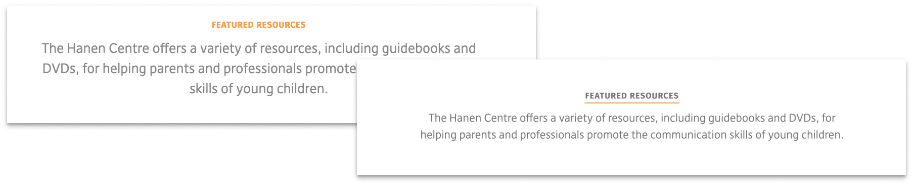I also replaced all light gray font use with darker grays and removed off-brand colours that did not meet contrast minimums.
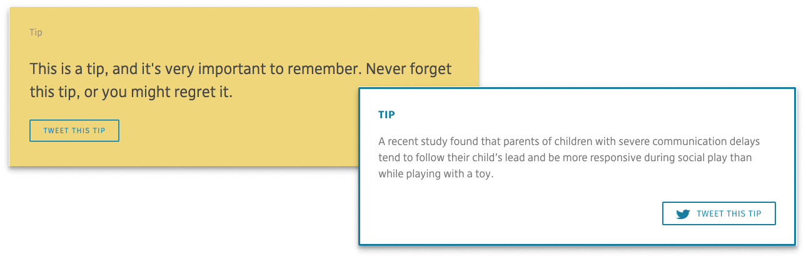While some issues are easy to spot and improve, I know there are many more things that I could take on to improve accessibility for everyone. A few more issues I tackled in this round was to decrease the link size on the surface of cards, add labels to all form fields, increase font sizes to a minimum of 18px on mobile, and designate appropriate uses of alt tags.
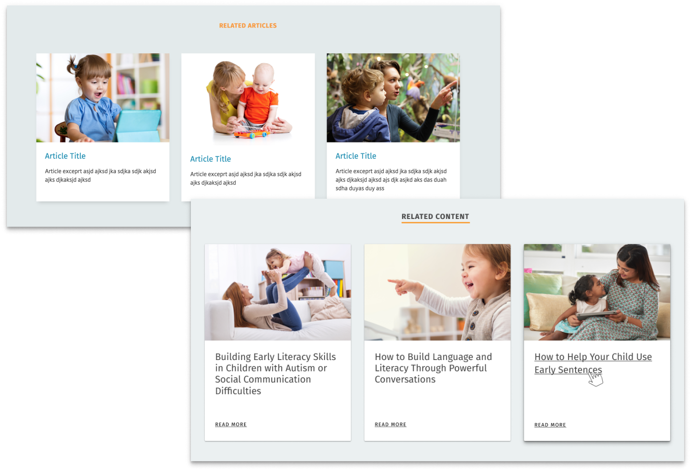Because some of the primary issues for users is understanding the extent of what hanen does, the difference between events with custom naming conventions (workshops vs programs), and where to go to find the resource they need, I took a deeper dive into how the navigation was designed.
Users are fairly evenly split between viewing content on mobile and desktop (although it depends on which feature they are most interested in). The initial design had a responsive navigation with mega menus, but it collapsed to a mobile hamburger menu at a small desktop size (1140px). This early collapse presented issues for smaller screens and narrower browser windows, and in the redesign of the navigation, one of my top goals was to keep the full navigation in sight longer.
 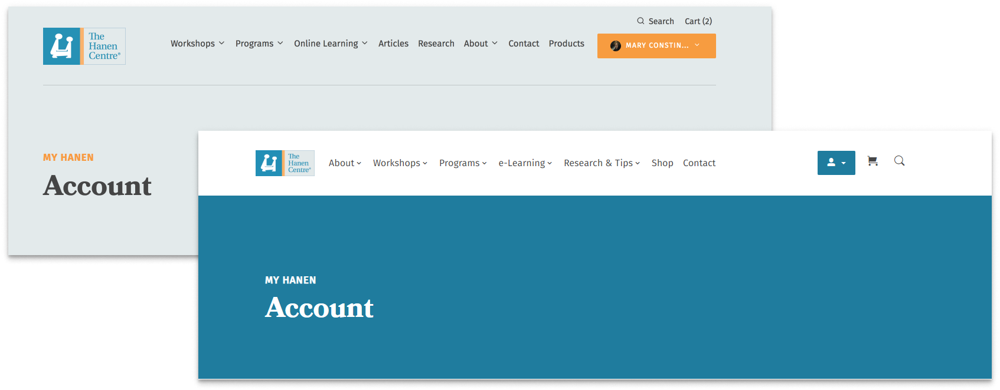
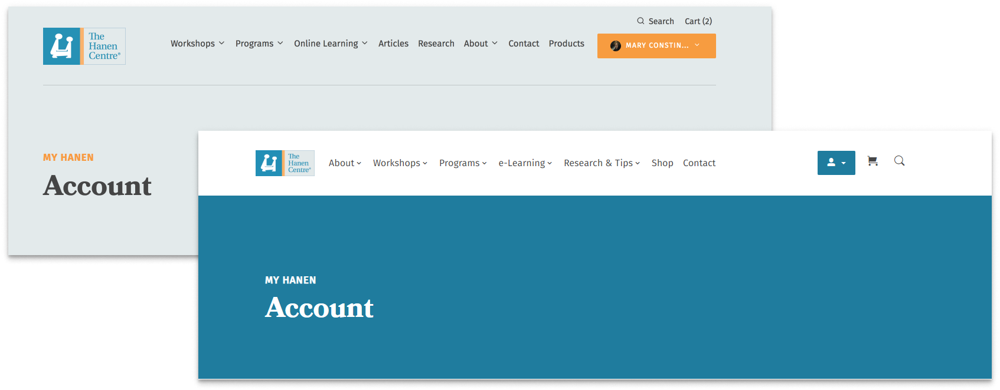
Between the research and user task analysis, I also found that users log in primarily as an interruption task, and not until they have to. The same goes for creating account, but even less so- the primary use case to create an account is for ecommerce check out. Because of this, I removed create account from the main navigation, simplified the log in button, and set the primary authentication actions as modals so that the user could fulfill authentication quickly and easily. The final iteration features a collapse at a portrait tablet (990px) and a fixed position to keep the navigation in sight, and a simple log in button or avatar-based user menu.
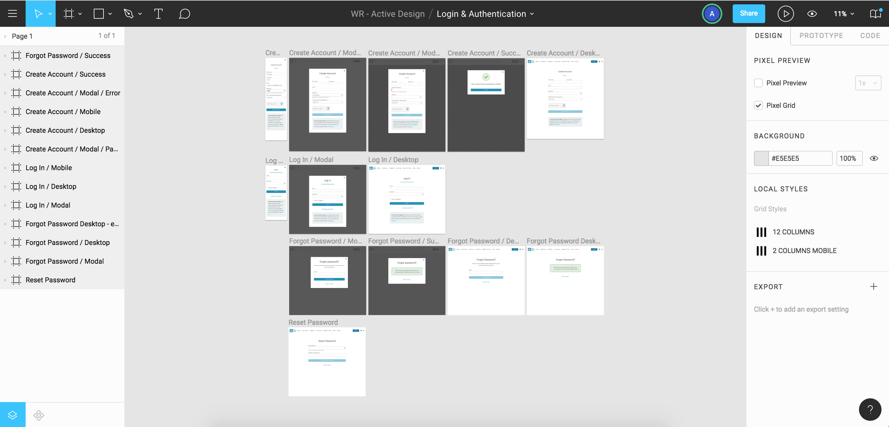Modal based authentication
To address one of the key issues around naming convention confusions and help users quickly identify which link is best for them, I added descriptions of the main navigation links with a high level with heavy layout weight for each major feature in mega menus. The layouts maintained consistency for easy skimming and quick second-level selections. The mobile version maintains the same structure, with collapsing same-page secondary navigation, but without descriptions to avoid overwhelming amounts of content.
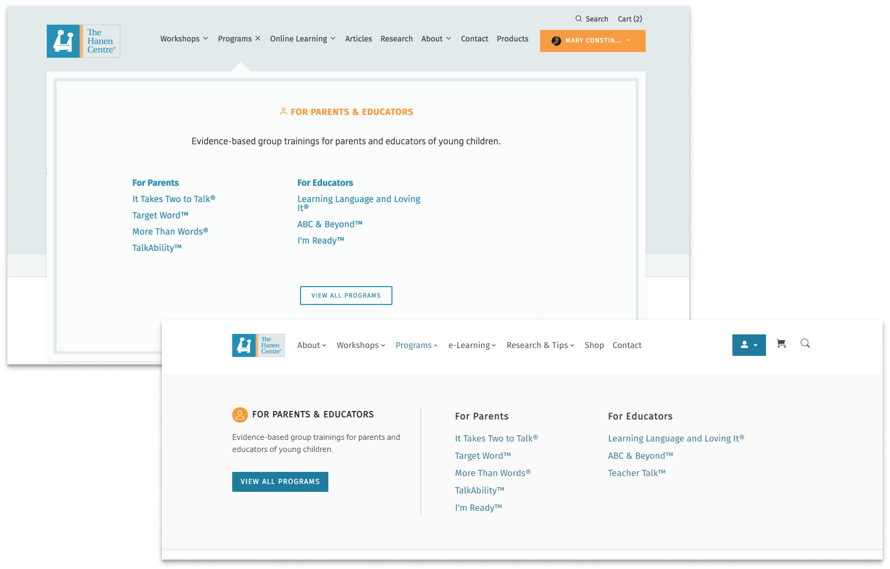One of the main lead generators for Hanen is the in-house produced content. The initial concept was to give users an option to filter by type and content of articles. However, in user testing I found that majority of the filters beyond the main 4 categories weren’t being used very much - mostly because the filter categories were either too specific or too vague, which stemmed from content topics having a high turnover rate.
With more testing on alternative approaches, I arrived at a slightly new architecture with a new UI for filtering based primarily on popular tags. The goal was to provide a softer browsing experience with more specific article categories. So far in in-house user testing it has encouraged more continuous article browsing and elicited fewer ‘confusion comments’, but it has yet to be tested in the real world with a more significant number of users.
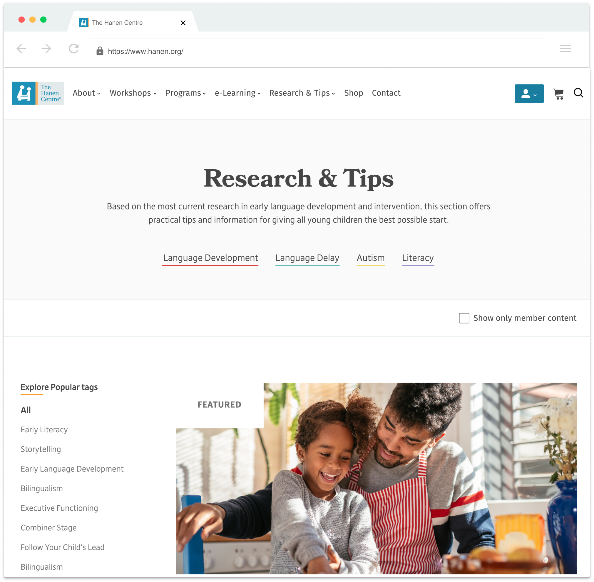Additional features included in articles are related articles and tags to continuously support soft browsing, printable pages with a print button (one of the biggest requests from the initial user research). Because most users are interested in only one main category (i.e. Autism but not literacy), I also separated category pages for into distinct pages to allow users to explore and share their specific interest. In an effort to support non-professionals more on the website, I removed the ability for non-members to see but not interact with or read member-only content, primarily for the reason that they most likely will never be able to become members.
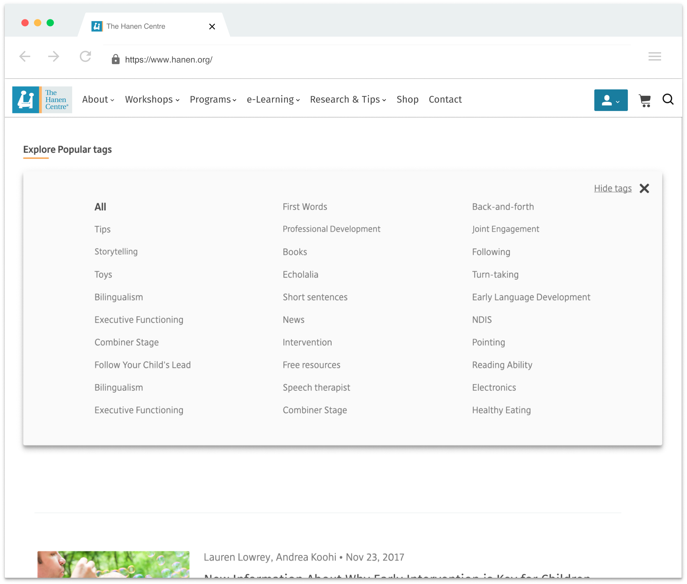Both hanen members and caregivers strongly voiced the desire to connect with one another. We built a place for members to build their public profiles, and a feature for users to search for the type of certified professional they want to connect with. While the search function was not facing large issues, many test users in the role of ‘professional’ were struggling to find out where to fill out their profile, as it was included at the bottom of their account page. To make this feature more prominent, I created the public profile forms as their own feature, and elevated them to be visible directly from the user menu. To make the forms more friendly and the process more familiar, I split the forms into smaller and related sections with a UI pattern using modals that more closely resembled profiles for social networks.
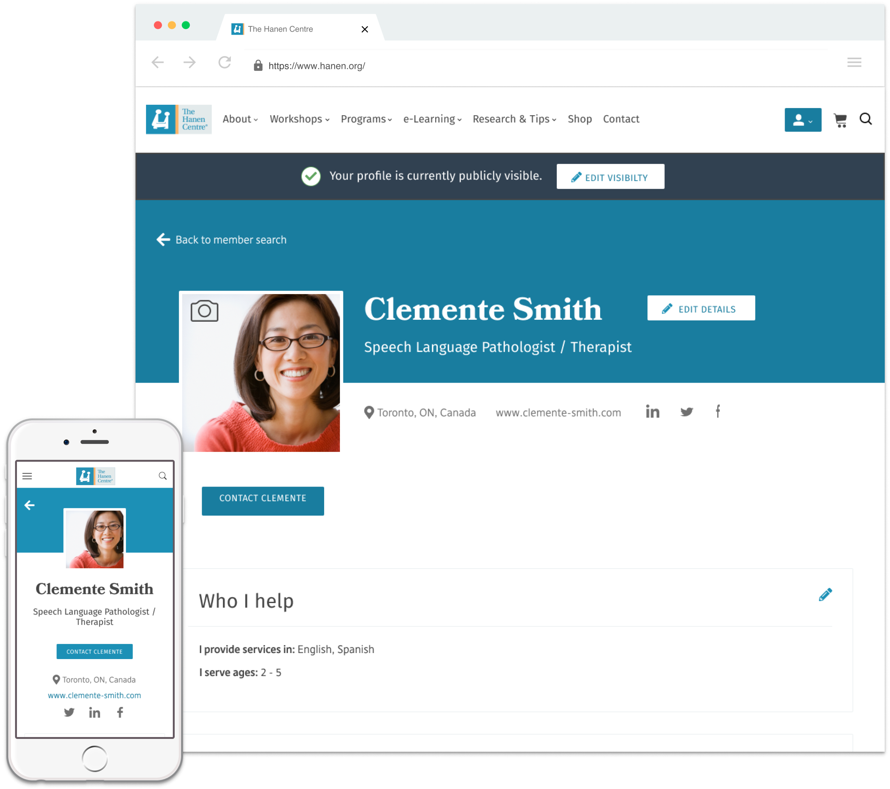 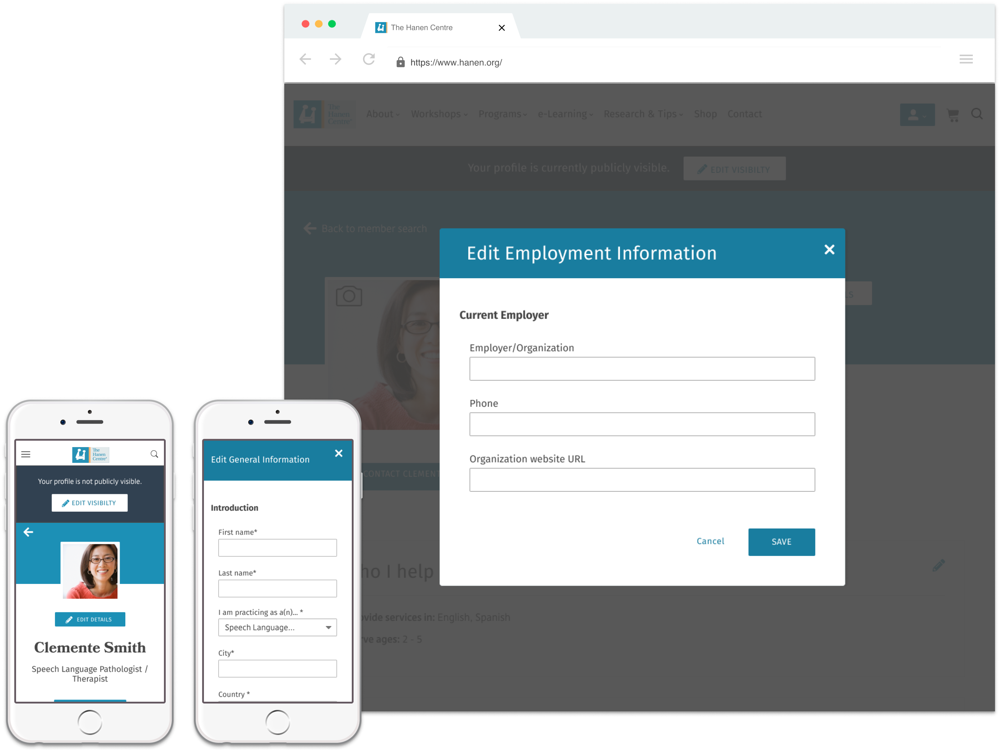Just in case you’re looking out for it, this project is still in it’s MVP development mode. You can watch www.hanen.org for the new update (most likely coming early 2019).